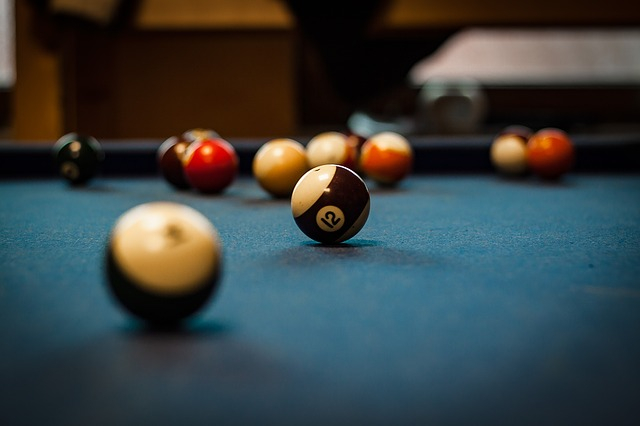

MUNDO DE BILLAR
Este es un diseño demo creado con boostrap 4 y sus nuevas funciones
Billar inglés

Snooker: Se juega en una mesa usualmente más grande que en cualquier juego de billar estadounidense. Se utilizan 21 bolas, 15 de ellas son rojas, las 6 restantes son de otros colores y cada una de estas bolas tiene un valor:
Negra: 7 pts.
Rosa: 6 pts.
Azul: 5 pts.
Café: 4 pts.
Verde: 3 pts.
Amarilla: 2 pts.
Rojas: 1 pt.
Una bola de billar #4
El jugador debe comenzar introduciendo una bola roja, y posteriormente irá alternándola con otra de color que él elija (y que habrá de ser anunciada). El jugador finaliza su turno cuando ha introducido todas las bolas rojas y posteriormente las de color por orden de valor de menor a mayor; o simplemente cuando falla. Las bolas de color diferente a la roja vuelven a colocarse en su sitio tras ser entroneradas, hasta que no queden más bolas rojas, momento a partir del que ya no vuelven a la mesa.
Bolas de snooker.
La suma de la puntuación obtenida por cada jugador según las bolas introducidas determinará al vencedor de la partida. El máximo puntaje posible en una partida de Snooker es de 147 puntos.[cita requerida]
En caso de cometer falta (meter la bola blanca, meter una bola no elegida o tocar en primer lugar una bola que no corresponde) el jugador dará puntos a su contrincante (estos varían según el tipo de falta cometida).
El juego es muy popular en Gran Bretaña, Irlanda, Canadá, Australia y la India. Recientemente ha surgido interés por el mismo en Asia Occidental y jugadores de Tailandia, Hong Kong y China han llegado a la élite, aunque también su práctica se ha extendido mucho por otros países de Europa como España y Portugal.
Billar español y sus modalidades
Más conocido como el Spanish pool o Chapolín de carambolas, es un juego de origen español, en el que la mesa se divide en dos bandas con tres agujeros rojos que pertenecen a una banda y otros tres agujeros blancos a la otra banda (en caso de que la mesa posea bandas del mismo color, serán los tres de la banda derecha y los tres de la banda izquierda según el punto de salida). El juego comprende 15 bolas numeradas y una bola blanca cuyo valor es de 10 puntos (en el caso de que en un partido haya un empate a 65 puntos, la bola blanca tendrá un valor de 11 puntos para marcar la diferencia).
La suma de las bolas numeradas y la bola blanca son de 130 puntos, por lo tanto, ganará la partida el jugador que primero consiga llegar a 66 o más puntos.
Si un jugador introduce bola en la banda contraria, o no introduce ninguna bola en ningún agujero perderá su turno.
La Partida de Billar, cuadro pintado con oleo sobre lienzo por Jean Béraud. Colección particular.
Es un juego muy utilizado en Bélgica, Reino Unido u Holanda.